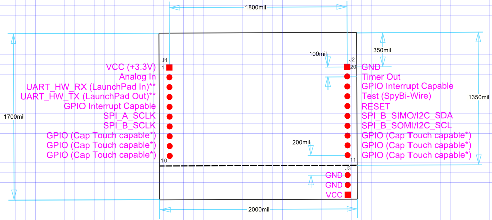

Launchpad XL
Expansion Board
This project template is the basis of an expansion board for the
TI Launchpad
board.
This board conforms to the 20-Pin LaunchPad and BoosterPack Standard, using the maximum height.
The board outline looks like the following:

(c)2012 Brian Sidebotham
(c)2012 Henry von Tresckow
(c)2012 Kicad Developers
©2020 Neil McNeight